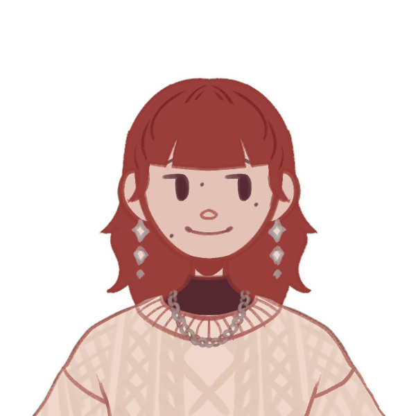
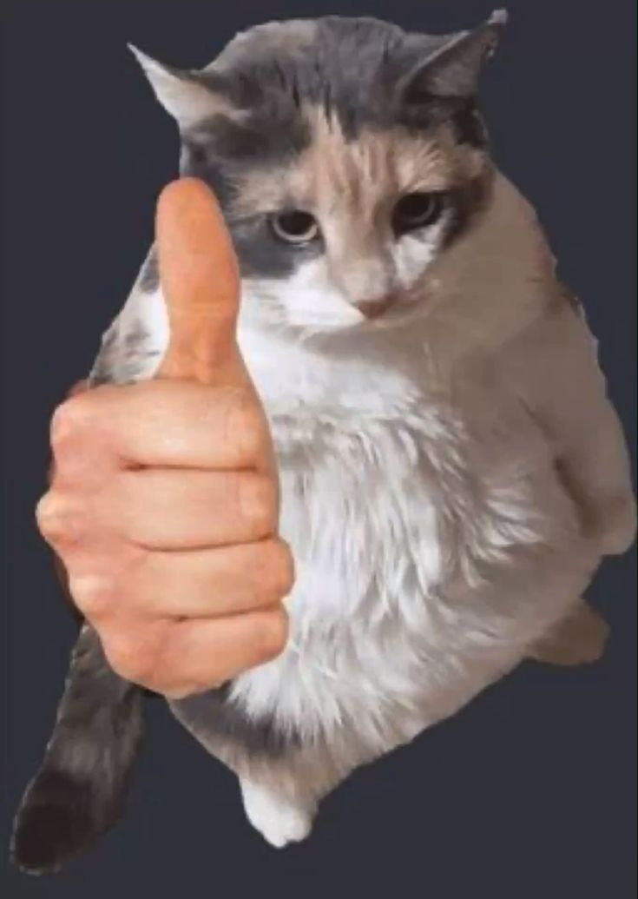

nina

Hi, I'm Nina. I study design and stuff. I was originally going to study computer science but wanted something less theoretical and more hands on, so I guess I'm here now. I think the coolest job would be one of those people who styles mannequins in clothing stores. I actually wanted to be a fashion designer when I was little, but didn't have much interest in learning to sew. Ironically at this point in time I have more interest in sewing than the drawing part of designing. I've developed something of a bond with computers ever since I was little and the highlight of my day was playing flash games on miniclip.com. I learned to code in high school and discovered I really liked it, and boy am I thankful for that because otherwise I might have been in a criminology degree or something silly like that right now. Sorry criminologists. Anyway, this website is a bunch of random things that I vaguely care about that I've tried to present in a way that will be entertaining to both you and me. Though it is worth mentioning, I have a bizarre sense of humour. And I was too amused by the spinning text you see above. Scroll on if you dare....
Two Truths and a Lie
Here's a fun little game to learn some useless facts about me. Click on the fact that you think is a lie.
fact goes here
fact goes here
fact goes here
things i think are neat!
- crafts
- rock bands
- patches
- gift wrapping
- blankets
- musical instruments
- puzzle games
- diy clothing
- the smell of fire
- skulls
- fun drinks
- baking
- gnomes
- wandering around
- british tv shows
- chocolate
- thrift stores
- dragons
- fall
- languages
- the colour green
- bonsai trees
